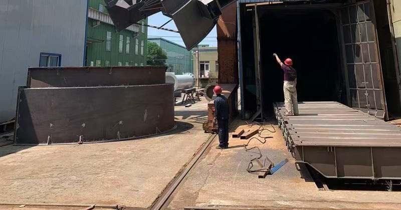

A laboratory swing / vibrating screen with multiple decks for particle size classification and sieve analysis — the quality-control backbone of any test programme, and the classifier on pilot lines.
Typical applications
Sieve analysis and PSD verificationPilot line classificationSample splitting by fractionFeed QC before separation tests
Why this design
- Multi-deck: one pass yields the whole size distribution
- Swing action is gentle on friable samples — less artificial degradation
- Doubles as the classifier on modular pilot lines
Key specifications
| Duty | Size classification and sieve analysis |
| Decks | Multi-layer screen decks |
| Use | Laboratories and pilot lines |
| Spec sheet | Deck count, dimensions and power on request |

Pre-dispatch inspection at our audited partner workshop, Shenyang.
Buy or rent, no plant project required · Free preliminary sizing · Quotation in one business day
How we work with you
- Free preliminary assessment — send us your ore type, feed size and duty; we recommend the right configuration at no cost.
- Verification — run the machine in your lab, or through our accredited partner laboratory (full test programmes are quoted per sample set).
- Quotation in one business day — machines ship in a crate worldwide; installation support is remote or on-site.